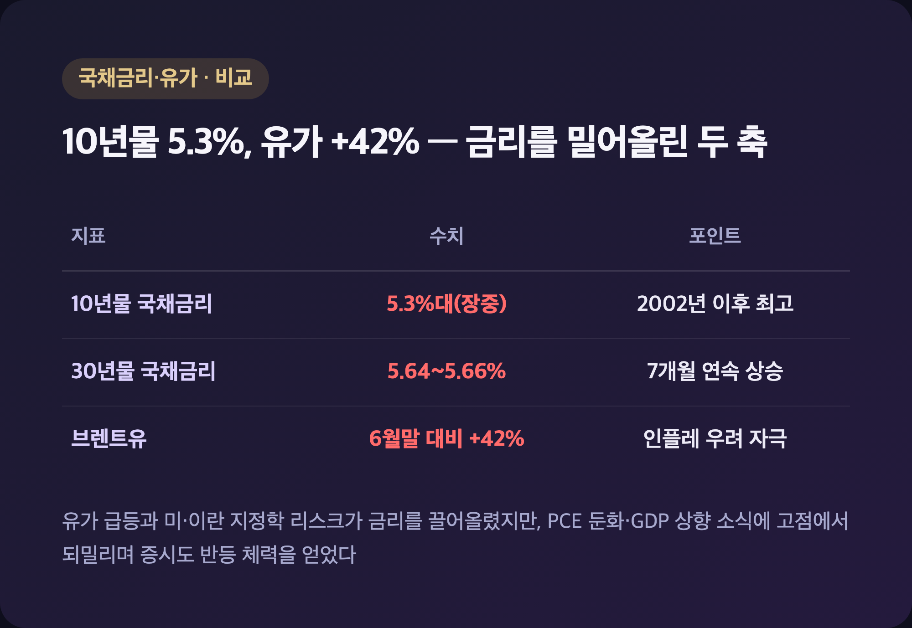
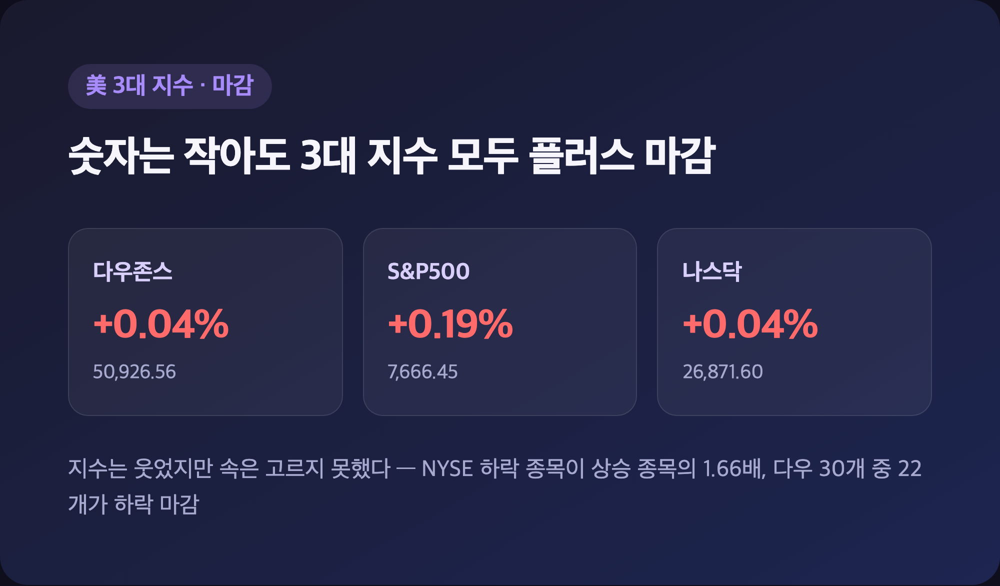
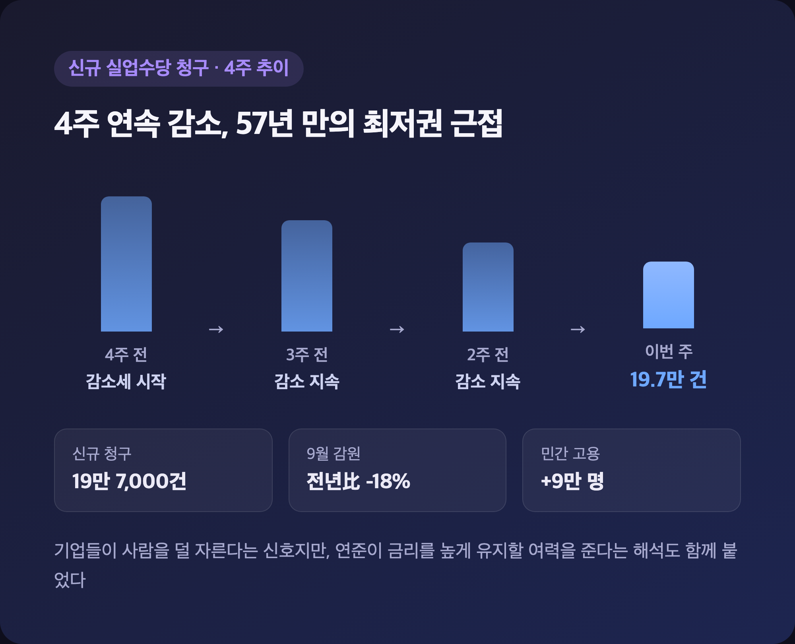

다우 +20.51포인트. 숫자만 보면 "오늘도 조용히 지나갔네" 싶죠. 그런데 장중에 미국 10년물 국채금리가 24년 만에 5.3%를 넘었다는 거 아세요? 조용한 마감 뒤에 꽤 시끄러운 하루가 숨어 있었어서, 오늘 미장 정리는 그 얘기부터 풀어볼게요.
📈 美 10년물 금리 5.3%대 돌파 – 24년 만의 최고치, 범인은 유가
|
10년물 국채금리 장중 5.3% 상회(2002년 이후 최고) / 30년물 약 5.64~5.66% |

| 배경 | 내용 |
|---|---|
| 브렌트유 급등 | 6월 말 저점 대비 약 +42%, 에너지발 인플레 우려 자극 |
| 지정학 리스크 | 미-이란 갈등 재점화 |
| 금리 추세 | 10년물 7개월 연속 상승(2011년 이후 처음) |
| 재정 우려 | 재정적자 확대 부담도 채권시장 약세 요인으로 거론 |
국채시장이 최근 몇 달 "수십 년 만에 최악의 분기"를 보냈다는 평가가 나올 정도였는데, 오늘도 장 초반부터 금리가 쭉쭉 튀면서 분위기가 안 좋았어요. 그런데 이날 발표된 PCE 물가지표가 예상보다 둔화된 걸로 나오면서 10월 추가 긴축 기대가 39% 수준까지 낮아졌고, 2분기 GDP 성장률도 2.2%로 상향 수정됐습니다. 이 소식에 금리가 고점에서 조금씩 되밀리기 시작했고, 그 틈에 증시도 저점에서 반등할 체력을 얻었어요. "금리 vs AI 랠리"의 줄다리기였다고 하면 딱 맞는 표현일 것 같습니다.
📊 다우 50,926.56·나스닥 26,871.60 – 금리 급등 버텨낸 소폭 상승 마감
|
다우존스 50,926.56(+20.51p, +0.04%) / S&P500 7,666.45(+0.19%) / 나스닥 26,871.60(+0.04%) |

| 지수 | 종가 | 등락률 |
|---|---|---|
| 다우존스30 | 50,926.56 | +0.04% |
| S&P500 | 7,666.45 | +0.19% |
| 나스닥종합 | 26,871.60 | +0.04% |
사실 이 수치 정리하면서 좀 헷갈렸던 부분이 있는데요, 일부 소스에서는 다우 -443.87포인트(-0.9%, 50,906.05), S&P500 -0.3%(7,651.54)로 아예 하락 마감한 걸로 집계해놨더라고요. 근데 이 숫자, 어제(9/30) 실제 마감치랑 소수점까지 똑같아요. 그래서 저는 일부 기사가 하루 전 데이터를 그대로 다시 쓴 것 아닌가 싶었습니다. CNBC·야후파이낸스·TheStreet 등 복수 소스에서 반복 확인된 "3대 지수 모두 플러스 마감"쪽이 더 신뢰도 높다고 판단해서 이 수치를 기준으로 적었어요. 다만 지수는 올랐어도 속은 고르지 못했다는 집계도 있었는데, NYSE 기준 하락 종목이 상승 종목보다 1.66배 많았고 다우 30개 종목 중 22개가 떨어졌다는 얘기도 나왔거든요. 지수만 보면 평온한데 종목별로는 쏠림이 심했던, 딱 그런 장이었던 셈이에요.
💾 마이크론 실적 서프라이즈 – AI 반도체 랠리, 브로드컴·시높시스도 동반 강세
|
마이크론(MU) 4분기 실적·가이던스 서프라이즈 / 브로드컴(AVGO) 동반 강세 / 시높시스(SNPS) +4.8% |
| 종목 | 이슈 |
|---|---|
| 마이크론(MU) | 4분기 실적 예상 상회, 1분기 가이던스 상향, "AI 메모리 수요 여전히 매우 강하다" |
| 브로드컴(AVGO) | AI 인프라 강세 동반 상승, 앤스로픽과 420억 달러 규모 컴퓨팅 인프라 금융조달 협상설 |
| 시높시스(SNPS) | AI 소프트웨어 수요 강세, +4.8%(일부 소스 기준) |
| 앤스로픽 | 11월 중순 IPO 추진 가능성 보도 |
25주 들고 있는 삼성전자, SK하이닉스 물량도 있는 입장에서는 마이크론이 "AI 메모리 수요가 여전히 매우 강하다"고 콕 집어 말해준 게 반가운 코멘트였어요. 데이터센터발 수요가 꺾이지 않았다는 신호니까요. 브로드컴이 앤스로픽에 자금을 대주고 그 돈으로 자사 장비를 사게 하는 구조(공급업체가 고객사 자금까지 대주는 최근 AI 업계 트렌드)라는 보도도 눈에 띄었는데, "이 정도로 돈을 돌려가며 사업을 키우는구나" 싶더라고요. 시장에서는 "It's AI or bust"(AI가 아니면 답이 없다)라는 표현까지 나왔다는데, 에너지 섹터는 -0.9%, 유틸리티는 +1.2%였다는 집계를 보면 그 온도차가 실제로 느껴지는 하루였습니다.
🗓️ 셧다운 걱정하셨다면 – 이미 9월에 끝난 얘기였어요
|
임시예산안 서명(9/2) → 연방정부 자금 지원 2026년 12월 11일까지 연장 / 10/1 셧다운 미발생 |
혹시 "오늘 미국 셧다운 되는 거 아니냐"고 걱정하셨다면, 그건 이미 지난달에 정리된 얘기예요. 트럼프 대통령이 9월 2일 단기 임시예산안에 서명하면서 10월 1일 자정 시한을 넘기지 않고 셧다운을 피했고, 이 임시예산으로 연방정부는 12월 11일까지는 자금 걱정 없이 돌아갑니다. (2025년의 43일짜리 셧다운이나 2026년 초 두 차례 셧다운은 이미 다 끝난 별개의 과거 사건이라, 헷갈리지 않으셔도 돼요.) 참고로 과거 20차례 셧다운 동안 S&P500은 평균적으로 거의 변화가 없었고, 그 기간의 절반은 오히려 상승 마감했다고 하니, 셧다운 자체가 증시에 주는 충격은 생각보다 크지 않다는 것도 알아두면 좋을 것 같아요.
💼 신규 실업수당 청구 57년 만 최저권 – 노동시장은 여전히 탄탄
|
신규 실업수당 청구 19만 7,000건(4주 연속 감소, 약 57년 만의 최저 근접) / 9월 감원 전년比 -18% |

| 지표 | 내용 |
|---|---|
| 신규 실업수당 청구 | 19만 7,000건, 4주 연속 감소 |
| 9월 감원 건수 | 전년 동월 대비 -18% |
| 민간 부문 고용 | 약 9만 명 증가(예상치 상회) |
어제 미장 정리에서 다룬 그 ADP 민간고용 서프라이즈 흐름이 이번에도 비슷하게 이어진 느낌이었어요. 실업수당 청구가 57년 만의 최저권에 근접했다는 건 그만큼 기업들이 사람을 안 자르고 있다는 뜻이니까, 노동시장 자체는 여전히 단단하다는 해석이 나왔습니다. 다만 이게 꼭 좋은 소식만은 아닌 게, 연준이 금리를 높게 유지할 여력을 준다는 해석도 같이 붙었거든요. 내일(금요일) 나올 비농업부문 고용지표가 채권시장에 중요한 변수가 될 거라는 전망이 공통적으로 나왔으니, 저도 그 숫자부터 확인해봐야 할 것 같아요.
마무리하며
오늘 다우 +0.04%(50,926.56), S&P500 +0.19%(7,666.45), 나스닥 +0.04%(26,871.60)로 3대 지수 모두 소폭 플러스 마감했어요. 장중엔 국채금리 24년 만의 최고치로 흔들렸지만, 마이크론발 AI 반도체 랠리가 결국 버텨낸 하루였습니다.
솔직히 다우 +20포인트짜리 숫자만 보면 "별일 없었네" 하고 넘어가기 쉬운데, 막상 뜯어보니 금리와 AI 랠리가 팽팽하게 줄다리기한 날이었더라고요. 저는 일단 내일 비농업고용지표 결과부터 챙겨보고, 그게 국장 반도체주로 어떻게 넘어오는지 지켜보려고 합니다.
조용해 보이는 지수 뒤에 이렇게 많은 일이 있을 줄이야. 내일은 또 어떤 숫자로 놀라게 될지, 일단 오늘은 여기서 마무리할게요 🌱